SparkSQL 应用：NBA球员的统计分析
实验简介
实验内容是使用SparkSQL对NBA球员数据进行统计分析，确定使用标准差等指标做为球员评估标准，生成评价指标并保存到临时表中，为后续的分析提供依据。最后，使用原始表和指标表对NBA球员数据进行统计分析。
实验目的
- 掌握SparkSQL的基本操作
- 掌握SparkSQL数据分析的思路和方法
- 掌握SparkSQL的语法与函数的使用
实验内容
实验内容是使用SparkSQL对NBA球员数据进行统计分析，确定使用标准差等指标做为球员评估标准，生成评价指标并保存到临时表中，为后续的分析提供依据。最后，使用原始表和指标表对NBA球员数据进行统计分析。
实验知识点
- SparkSQL的基本操作
- SparkSQL数据分析的思路和方法
- SparkSQL的语法与函数的使用
实验环境
软件环境：
Hadoop 2.7分布式集群环境
Spark 2
开发环境、工具：
CentOS 7
SparkSQL
IntelliJ IDEA
- 用户账号
账号：student
密码：stu123
实验过程
实验步骤
本实验基于NBA球员历史数据1980~2017年各种表现，全方位分析球员的技能NBA球员水平并使用SparkSQL对进行评估，主要包括以下步骤：
- 实验环境准备工作
- 球员评估分析
- 数据说明
- 使用sparkSQL对球员各项指标进行统计量计算与能力评估
- 结果验证
知识点介绍
- 球员水平评价指标
均值μ与标准差σ 均值是可以从整体上描述出数据的分布状态，却无法告诉我们数据的波动性有多大。举个例子，在NBA中，平均数据用来衡量一个球员的战斗力，如场均得分、盖帽、抢断、助攻等。那么如果你是教练，想知道哪位球员发挥最稳定，因为你需要一支值得信赖的球员队伍，而不是表现时好时坏，水平反复无常，波动性很大的队员，而标准差就是为了描述数据集的波动大小而发明的。
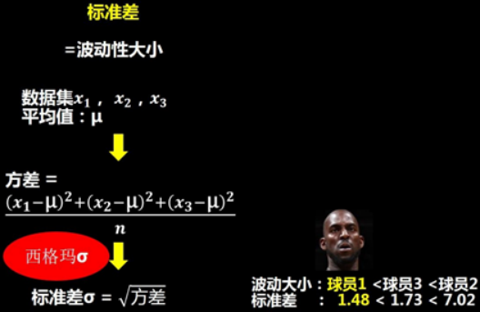
Z-score
Z-Score标准化是数据处理的一种常用方法。通过它能够将多组不同量级的数据转化为统一量度的Z-Score分值进行比较。
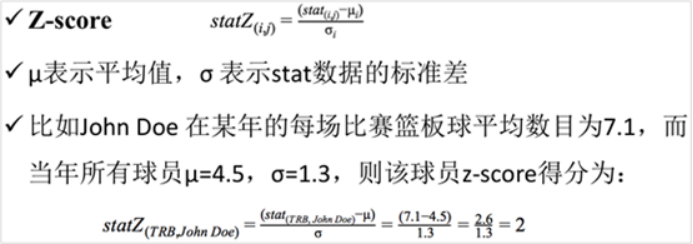
Z-Score标准化计算可以使得数据标准统一化，提高了数据可比性，削弱了数据解释性。同时，Z-Score分值越高，则表示球员的能力越强。
数据说明
- 实验数据路径 本次实验的数据集所在路径为：/home/student/data
- 本次实验的缓存数据所在路径为：/home/data
本实验数据为1970年到2016年，每年各球队的球员比赛数据统计，本实验选取其中1980年到2016年间球员在NBA中的各项表现作为评估指标。
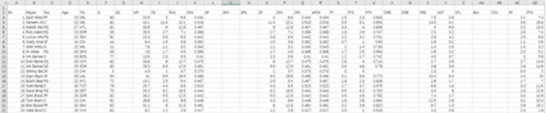
球数据缩写说明：3P：3分命中； 3PA：3分出手； 3P%：3分命中率； 2P：2分命中； 2PA：2分出手； 2P%：2分命中率； RB：篮板球； STL：抢断； AST：助攻； BLT: 盖帽； FT: 罚球命中； TOV: 失误。
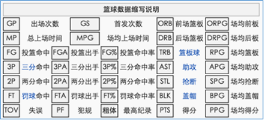
程序思路
使用sparkSQL对球员各项指标进行统计量计算与能力评估，首先给数据增加时间信息并对所读取数据进行数据清洗与数据缓存后，对1980-2016年之间球员的各项统计量进行计算，随后建立临时表用于存储球员历年的各项统计量，最后调用sparkSQL对原始表评估球员能力的各项指标进行筛选、展示与输出，从而达到全方位分析球员的技能以及合理选择球员的目的。
本实验的主体思路为：
- 数据预处理：例如去掉不必要的标题等信息；
- 数据的缓存：为加速后面的数据处理打下基础；
- 基础数据项计算：方差、均值、最大值、最小值、出现次数等；
- 计算Z-score：基于基础数据项的统计，可以进一步计算得到Z-score；
- 球员评价指标的统计分析：基于前面四步的基础借助Spark SQL进行多维度NBA篮球运动员数据分析（这里可以使用SQL语句，也可以使用DataSet，不过优先选择使用SQL。因为复杂的算法级别的计算已经在前面四步完成了且广播给了集群，故在SQL中可以直接使用）；
- 把数据放在注册临时表中；
- 依据sparkSQL对统计量筛选并对球员进行评估。
本次实验设计到z-score算法的计算，z-score为数据标准化，是一种常见的数据处理的方式，其公式为（最大值-平均值）/ 标准差所得到的值。
由于z-score计算过程，代码步骤过于繁琐，而且本次实验着重为讲述Spark SQL实际应用，所以手册中不在详细讲解z-score的具体计算过程，现已将具体的z-score代码实现放入实验环境中，可直接使用，代码中已有详细注释讲解计算过程，如有想要详细了解的同学可自行查阅。
- 初始化Spark环境
// ****创建一个SparkSession并将其初始化****// Creates a SparkSession. // 采用.setMaster("local[*]")方法指定maser的url为本地，local[*]表示采用本机最大线程数计算（CPU的线程上限），local表示采用单线程计算， // local[3]表示采用3线程计算；采用.setAppName("sparkSQL_NBA_demo")方法将其命名为"sparkSQL_NBA_demo" val conf = new SparkConf().setMaster("local[*]").setAppName("sparkSQL_NBA_demo") // 通过.build与.appName初始化SparkSession，并通过getOrCreate的方式创建它 val spark = SparkSession .builder .appName(s"${this.getClass.getSimpleName}") .config(conf) .getOrCreate() // 使用变量 sc来表示SparkContext val sc = spark.sparkContext- 设置本实验的数据路径
xxxxxxxxxx// ****采用Hadoop计算资源实现实验****// DATA_PATH表示1980-2016年NBA球员各项数据的文件路径// TMP_PATH表示缓存数据的路径，该路径下为空 val DATA_PATH = "hdfs://localhost:8020/home/student/data" val TMP_PATH = "hdfs://localhost:8020/home/data" val RESULT_PATH = "hdfs://localhost:8020/home/data/save"- 注册临时表，用以存储数据并方便sparkSQL调用
xxxxxxxxxx//****注册临时表schemaN****//create schema for the data frame val schemaN = StructType( // 表结构包括40个数据类型为StructField的数据，具体如下： // 名称为name，数据类型为StringType，且可为空的StructField StructField("name", StringType, true) :: // 名称为year，数据类型为IntegerType，且可为空的StructField StructField("year", IntegerType, true) :: // 名称为age，数据类型为IntegerType，且可为空的StructField StructField("age", IntegerType, true) :: // 名称为3P"，数据类型为DoubleType，且可为空的StructField StructField("3P", DoubleType, true) :: // 名称为z3P，数据类型为DoubleType，且可为空的StructField StructField("z3P", DoubleType, true) :: // 名称为zTOT，数据类型为DoubleType，且可为空的StructField StructField("zTOT", DoubleType, true) :: // 名称为n3P，数据类型为DoubleType，且可为空的StructField StructField("n3P", DoubleType, true) :: // 名称为nTOT，数据类型为DoubleType，且可为空的StructField StructField("nTOT", DoubleType, true) :: Nil)- sparkSQL数据库初始化，用以建立并命名数据表、字段，从而便于SQL访问
xxxxxxxxxx//接收z-score计算结果val score_demo = new Z_Score_demoval nStats = score_demo.z_score(sc,DATA_PATH,TMP_PATH,RESULT_PATH)// 定义变量nPlayer， 为x.name, x.year, x.age, x.stats(3), x.statsZ(3), Array(x.valueZ)// , x.statsN(3), Array(x.valueN)的映射表中的每一行，也就是每个球员的信息val nPlayer = nStats.map(x => Row.fromSeq(Array(x.name, x.year, x.age) ++ Array(x.stats(3)) ++ Array(x.statsZ(2)) ++ Array(x.valueZ) ++ Array(x.statsN(3)) ++ Array(x.valueN))) // 定义变量dfPlayersT，表示创建的关系数据库，也就是说球员信息nPlayer与注册临时表schemaN之间的对应关系 val dfPlayersT = spark.sqlContext.createDataFrame(nPlayer, schemaN) // dfPlayersT表示nPlayer与schemaN之间的字段名映射，表名为tPlayers dfPlayersT.registerTempTable("tPlayers") // 定义变量dfPlayers，表示根据年龄排序的数据表内容 val dfPlayers = spark.sqlContext.sql("select age-min_age as exp,tPlayers.* from tPlayers join " + "(select name,min(age)as min_age from tPlayers group by name) as t1 on tPlayers.name=t1.name order by tPlayers.name, exp ") // dfPlayers表示字段与内容之间的映射关系，表名为Players dfPlayers.registerTempTable("Players")- 统计量筛选与输出，用以评估球员能力
xxxxxxxxxx//分析自1980年以来每个年龄段参赛次数，groupBy("age").count表示通过groupBy函数以age的频数进行分组， // sort("age")表示将各组以age进行排序，show(100)表示展示前100行 dfPlayers.groupBy("age").count.sort("age").show(100) //查看2016年z-score排名，take(10)表示选择前10个球员并显示 spark.sql("Select name, zTot from Players where year=2016 order by zTot desc").take(10).foreach(println) //查看2016年正则化z-score排名，take(10)表示选择前10个球员并显示 spark.sql("Select name, nTot from Players where year=2016 order by nTot desc").take(10).foreach(println) //查看Curry所有数据，collect表示选择所有符合条件的球员并显示 spark.sql("Select * from Players where year=2016 and name='Stephen Curry'").collect.foreach(println) //查看Curry三分球得分排名，take(10)表示选择前10个球员并显示 spark.sql("select name, 3p, z3p from Players where year=2016 order by z3p desc").take(10).foreach(println)程序开发
本实验的开发过程在本地完成，需要在本课程的“参考资料”界面，下载 “ Spark IntelliJ 本地开发环境搭建 ” 说明文档。
按照上面下载的 ”Spark IntelliJ 本地开发环境搭建“ 文档说明，在本地安装配置 JDK，SDK，IntelliJ 开发工具。
- 使用IDEA新建一个Maven项目：sparkSQL_NBA_Demo。
具体步骤请参考 “Spark IntelliJ 本地开发环境搭建”文档中的 “工程创建” 和 “配置scala类的运行环境” 部分，并对照 “修改 pom.xml文件” 部分的内容 ，将pom文件下
xxxxxxxxxx<dependencies> <dependency> <groupId>org.apache.spark</groupId> <artifactId>spark-core_2.11</artifactId> <version>2.3.3</version> </dependency> <dependency> <groupId>org.apache.spark</groupId> <artifactId>spark-streaming_2.11</artifactId> <version>2.3.3</version> <scope>provided</scope> </dependency> <dependency> <groupId>org.apache.spark</groupId> <artifactId>spark-sql_2.11</artifactId> <version>2.3.3</version> </dependency> <dependency> <groupId>org.apache.spark</groupId> <artifactId>spark-mllib_2.11</artifactId> <version>2.3.3</version> <scope>compile</scope> </dependency> <dependency> <groupId>org.scala-lang</groupId> <artifactId>scala-library</artifactId> <version>2.11.8</version> </dependency></dependencies>- 在项目的com包中创建一个sparkSQL_NBA_Demo类，具体创建步骤请参考实验“Spark IntelliJ 本地开发环境搭建”文档的 “创建scala类”，完整代码如下：
xpackage comimport org.apache.log4j.{Level, Logger}import org.apache.spark.SparkConfimport org.apache.spark.sql.types.{DoubleType, IntegerType, StringType, StructField, StructType}import org.apache.spark.sql.{DataFrame, Row, SparkSession}object sparkSQL_NBA_Demo{ //屏蔽日志信息 Logger.getLogger("org").setLevel(Level.ERROR) def main(args: Array[String]) { // 配置Spark环境 val conf = new SparkConf().setMaster("local[*]").setAppName("sparkSQL_NBA_demo") val spark = SparkSession .builder .appName(s"${this.getClass.getSimpleName}") .config(conf) .getOrCreate() val sc = spark.sparkContext // 数据路径配置 val DATA_PATH = "hdfs://localhost:8020/home/student/data" val TMP_PATH = "hdfs://localhost:8020/home/data" val RESULT_PATH = "hdfs://localhost:8020/home/data/save" // 定义表结构 val schemaN = StructType( StructField("name", StringType, true) :: StructField("year", IntegerType, true) :: StructField("age", IntegerType, true) :: StructField("3P", DoubleType, true) :: StructField("z3P", DoubleType, true) :: StructField("zTOT", DoubleType, true) :: StructField("n3P", DoubleType, true) :: StructField("nTOT", DoubleType, true) :: Nil) // 计算Z-score val score_demo = new Z_Score_demo val nStats = score_demo.z_score(sc,DATA_PATH,TMP_PATH,RESULT_PATH) // 构建DataFrame并注册临时表 val nPlayer = nStats.map(x => Row.fromSeq(Array(x.name, x.year, x.age) ++ Array(x.stats(3)) ++ Array(x.statsZ(2)) ++ Array(x.valueZ) ++ Array(x.statsN(3)) ++ Array(x.valueN))) val dfPlayersT = spark.sqlContext.createDataFrame(nPlayer, schemaN) dfPlayersT.registerTempTable("tPlayers") // 处理球员年龄数据并注册临时表 val dfPlayers = spark.sqlContext.sql("select age-min_age as exp,tPlayers.* from tPlayers join " + "(select name,min(age)as min_age from tPlayers group by name) as t1 on tPlayers.name=t1.name order by tPlayers.name, exp ") dfPlayers.registerTempTable("Players") // 数据分析与输出 println("===分析自1980年以来每个年龄段参赛次数===") dfPlayers.groupBy("age").count.sort("age").show(100) println("===查看2016年z-score排名，take(10)表示选择前10个球员并显示===") spark.sql("Select name, zTot from Players where year=2016 order by zTot desc").take(10).foreach(println) // 保存2016年z-score排名至CSV val result: DataFrame = spark.sql("Select name, zTot from Players where year=2016 order by zTot desc") result.coalesce(1).write.format("csv").save(s"${RESULT_PATH}") println("===查看Curry所有数据===") spark.sql("Select * from Players where year=2016 and name='Stephen Curry'").collect.foreach(println) println("===查看Curry三分球得分排名===") spark.sql("select name, 3p, z3p from Players where year=2016 order by z3p desc").take(10).foreach(println) }}sparkSQL_NBA_Demo编写完成后，请将名为Z_Score_demo.scala的附件下载到本地中，该类包含了z-score具体的计算过程。点击实验环境中的附件按钮，点击下载，即可将Z_Score_demo.scala文件下载至本地。下载完成后，将Z_Score_demo.scala文件复制到IDEA中的src\main\scala\com包下。
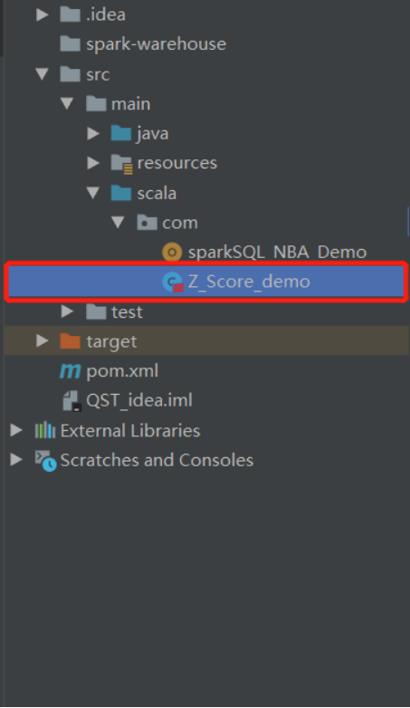
- 在本地运行一次，具体步骤请参考 “Spark IntelliJ 本地开发环境搭建”文档中的 “运行”，本地运行会报错，忽略这些错误，本地运行的主要目的是编译，为下一步打包做准备。
- 工程打包，具体步骤请参考 “Spark IntelliJ 本地开发环境搭建”文档中的 “Maven生jar包方法”。
服务器端运行
- 进入终端，打开终端连接。
- 环境准备
2.1 设置免密登录，在master上输入如下命令：
xxxxxxxxxxssh-copy-id master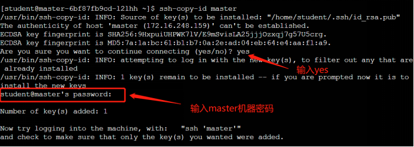
输入yes之后，输入master密码，机器密码可通过实验右侧的查看详情中进行查看。
2.2 启动环境
启动Hadoop：
xxxxxxxxxxstart-all.sh输入【jps】查看Hadoop是否启动成功，hadoop进程包含：NameNode、SecondaryNameNode、DataNode、ResourceManager、NodeManager。
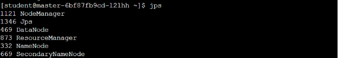
启动Spark：
xxxxxxxxxxcd /home/spark-2.3.2-bin-hadoop2.6/./sbin/start-all.sh输入【jps】查看Spark是否启动成功，Spark进程包括Master、Worker。
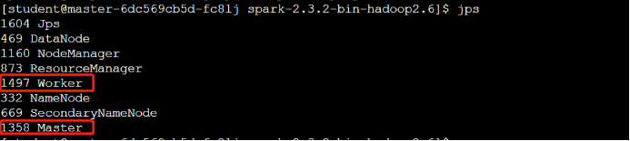
2.3 准备数据集
实验相关数据集以存放在实验环境的/home/student/data目录中。此时我们需要将/home/student/data目录下的数据上传到HDFS中。
在hdfs中创建/home/student/目录：
xxxxxxxxxxhadoop fs -mkdir -p /home/student/将数据集上传至该目录中:
xxxxxxxxxxhadoop fs -put /home/student/data /home/student/- jar包上传
将本地生成的jar包上传至服务器指定路径，具体步骤请参考 “Spark IntelliJ 本地开发环境搭建”文档中的 ”将程序文件上传至服务器“，jar包的上传路径为：/home/spark-2.3.2-bin-hadoop2.6。
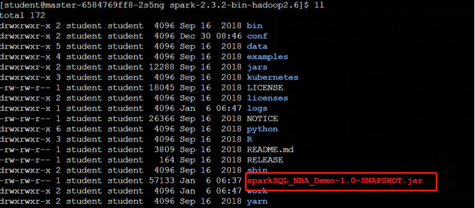
- 在服务器执行以下命令运行程序并查看结果
运行如下指令：
xxxxxxxxxxcd /home/spark-2.3.2-bin-hadoop2.6./bin/spark-submit --master local[*] --class com.sparkSQL_NBA_Demo /home/spark-2.3.2-bin-hadoop2.6/sparkSQL_NBA_Demo-1.0-SNAPSHOT.jar输入命令后，点击回车，程序即可运行，控制台输出结果数据。
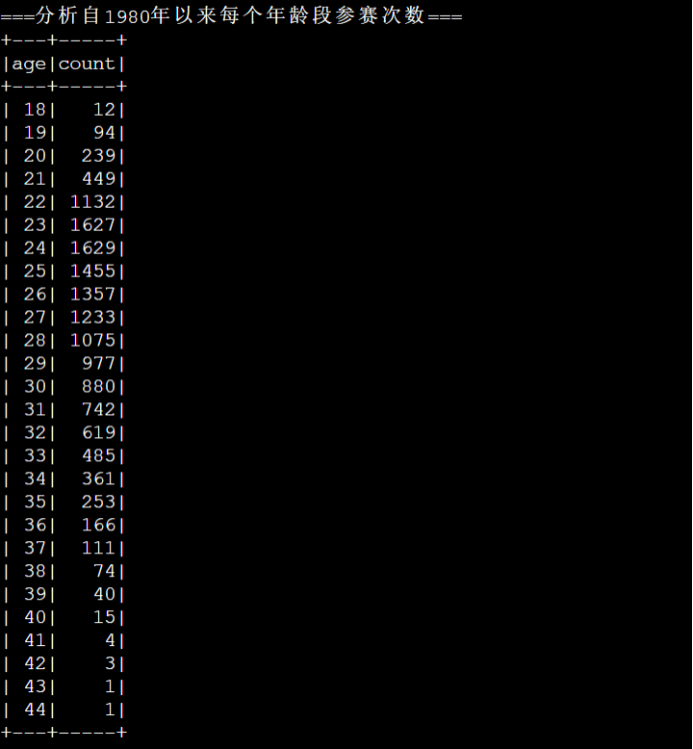
本结果由语句dfPlayers.groupBy("age").count.sort("age").show(100)运行所得，分析了自1980年以来每个年龄段参赛次数，groupBy("age").count表示通过groupBy函数以age的频数进行分组， sort("age")表示将各组以age进行排序，show(100)表示展示前100行。

本结果由语句spark.sql("Select name, zTot from Players where year=2016 order by zTot desc").take(10).foreach(println)运行所得，对2016年的z-score进行了排名操作，take(10)表示选择前10个球员并显示。

本结果由语句spark.sql("Select * from Players where year=2016 and name='Stephen Curry'").collect.foreach(println)运行所得，对Curry的所有数据进行了筛选，collect表示选择所有符合条件的球员并显示。

本结果由语句spark.sql("select name, 3p, z3p from Players where year=2016 order by z3p desc").take(10).foreach(println)运行所得，查看2016年三分球得分排名，take(10)表示选择前10个球员并显示。
将2016年球员的正则化z-score排名存储到路径RESULT_PATH下的csv文件中；
查看csv文件的保存路径：
xxxxxxxxxxhadoop fs -ls /home/data/save此时观察到路径/home/data/save下已经生成csv文件查看csv中保存的结果数据：
xxxxxxxxxxhadoop fs -cat /home/data/save/part-00000-17cb0d97-d881-4da0-bada-196d491ba7d7-c000.csv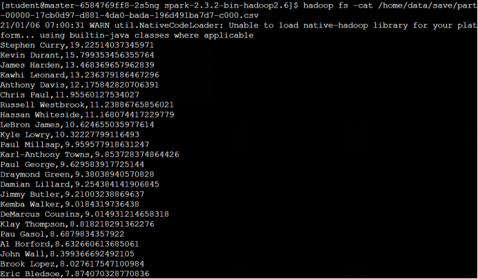
本结果由语句val result: DataFrame = spark.sql("Select name, zTot from Players where year=2016 order by zTot desc")与语句result.coalesce(1).write.format("csv").save(s"${RESULT_PATH}")运行所得，球员姓名对应其z-score值，对2016年球员的正则化z-score进行了排名操作，write表示将z-socre排名存储到路径RESULT_PATH下的格式为csv的文件中